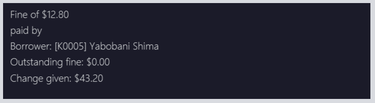

Overview
LiBerry is a desktop library management application for librarians to manage their books and borrowers.
It is a software optimized for librarians who prefer to work with a Command Line Interface (CLI), whereby interactions
with the software are done through text commands.
The main features of LiBerry include managing and searching for books, registering new borrowers, borrowing books and recording fines.
This portfolio serves to demonstrate my proficiency in the various aspects of software engineering such as coding,
project management and technical writing skills in crafting documentation that fits the target user.
My role was to design and implement the code for the loan feature, which will be further elaborated in the following sections. Also included are the details of the relevant documentation I have written in the user and developer guide to assist users and other developers to understand these features.
Summary of Contributions
This section summarizes the contributions I have made to the team project.
Main enhancement - Loaning feature
I implemented the commands and functionality related to the loaning and returning of books.
What it does
This feature set allows our users, librarians, to loan books to borrowers, return loaned out books, renew loaned
out books such that their due dates are extended, and to pay fines incurred for overdue books.
Justification
As the main purpose of a library is to allow visitors to borrow books, this feature set is core to a library and is needed for a library to function. The tracking of loaned out and returned books allows the user to easily manage a library. Allowing librarians to renew loaned out books can help them better serve borrowers who want to read the books for a longer period. The fine system for overdue books also ties in nicely with many libraries' policy of charging fines to deter late returns.
Highlights
The implementation of these features was challenging as a whole new set of code had to be written to model each loan occurrence
and to store these information. The book, borrower and the loan object had to be linked efficiently to reduce duplicated information stored.
Moreover, a great deal of defensive programming was applied as there were many bounds to each of these features. For
example, these features should only work when certain conditions are met, such as when the user is currently serving borrowers
and the inputs correspond to a book that is not on loan.
Additionally, I also created utility classes like DateUtil and FineUtil to centralize utility functions that dealt with
dates and fines respectively.
Other contributions
Project management
-
Managed the issues covered for each milestone and set up their deadlines. I also added each feature as an issue and assigned them to the appropriate team member.
-
Set up two Github project boards, one to brainstorm and prioritize user stories, and another to keep track of the features and commands.
-
Updated the developer guide to include user stories, use cases and non-functional requirements. Done through pull requests:
-
Maintained the team project website, including the site headers, navigation bar, badges and photos. Done through pull requests:
-
Managed the release of v1.1 of our project.
Enhancements to existing features
-
Enhanced code for the
Borrowerclass to be immutable. Done through pull request:-
#152 - Modified fields in Borrower to be immutable and added methods in the class to return new copies instead of mutating values in the current object.
-
-
Upgraded the
setcommand to support setting the maximum renew count such that librarians can define what is the maximum number of times a book can be renewed. Done through pull request:-
#178 - Modified the
setcommand to take in maximum renew count and integrated this setting to the model component.
-
-
Updated the user interface to reflect more borrower-related details. Done through pull request:
-
#179 - Updated panel dimensions to fit more results and added more borrower-related information such as the total outstanding fine.
-
Documentation
-
Wrote the quick start guide in the user guide.
-
Wrote the documentation and guide to the
Logiccomponent of our software in the developer guide. -
Improved and rectified the flow, content, styling, legend and diagrams of the user guide and developer guide according to feedback received from tutor and peers.
Community
-
Gave in-depth and insightful reviews of team members' pull requests.
-
Reviewed other team’s documentation, including their user stories, non-functional requirements and use of UML diagrams.
-
Contributed a helpful tip on the forum regarding the hiding of URL links when printing to PDF.
Tools
-
Integrated a new Github plugin, Coveralls, to the project repository. Coveralls was immensely helpful in tracking the test coverage of our team’s code.
-
Set up Netlify for the project repository to easily and quickly preview changes made to the project website and documentation.
Contributions to the User Guide
Given below are sections I contributed to the User Guide. They showcase my ability to write documentation targeting end-users.
Loaning book(s): loan
Loan book(s) to the currently served borrower.
The serial number of the book is used as the borrower would bring the physical copy of the book they want to borrow
to you. Thus, you do not have to search for the index of the book in the displayed book list.
Format: loan sn/BOOK_SN
Format: loan sn/BOOK_SN [sn/BOOK_SN]… - Coming in v2.0
Examples:
-
loan sn/B00006
You loan out the book with serial number B00006 to the currently served borrower.
 Figure 1. The user interface after the book is loaned out.
Figure 1. The user interface after the book is loaned out.After this command is entered, the command results display will provide you with a summary of which book is loaned out and tho who it is loaned to. As seen from the screenshot, the book will also be added to the list of currently loaned out books in the borrower’s panel on the right. Inside the main list on the left, an on-loan box would also indicate this book as being loaned out.
-
loan sn/B00201 sn/B02929 sn/B00203- Coming in v2.0
You loan out the books with serial numbers B00201, B02929 and B00203 to the currently served borrower.
Returning book(s): return
Return book(s) that were loaned by the borrower.
Fine incurred for late returns will automatically be calculated and added to
the borrower’s total outstanding fines.
Format: return INDEX or return -all
-
Returns the book at the specified
INDEXin the borrower panel or-allof the currently served borrower’s loaned out books. -
INDEXindicates the book at this index number shown in the borrower’s book list on the right side of the UI. The index must be a positive integer such as 1, 2 or 3, and must appear in the borrower panel. -
-allindicates all the books currently loaned out by the borrower.

-
Referring to the above screenshot as an example, entering
return 1would successfully return the book "Stefe Jobz". However, enteringreturn 3would be invalid as there’s no book at index 3 in the borrower panel. Enteringreturn -allwould return all of Bobby’s loaned out books, which are "Stefe Jobz" and "Behaves".
Renewing book(s): renew
Renew book(s) that are still loaned by the borrower, i.e., extend their due dates.
Format: renew INDEX or renew -all
Paying fines: pay
Receive AMOUNT (in dollars and up to 2 decimal places) from the currently served borrower to pay off his/her outstanding fines.
Format: pay $AMOUNT
Examples:
-
pay $12.80
You receive $12.80 from the borrower to pay off his/her fine.
Figure 3. The command results display after paying fines.As seen from the screenshot above, after a fine amount is paid, a summary can be seen. You will see any outstanding fine the borrower still has. If the borrower pays an amount greater than his/her total outstanding fine, you can refer to the change given line to see how much change you should return to the borrower.
-
pay $5
You receive $5 from the borrower to pay off his/her fine.
Contributions to the Developer Guide
Given below are sections I contributed to the Developer Guide. They showcase my ability to write technical documentation and the technical depth of my contributions to the project.
Book loaning feature
Details of Implementation
The functionalities and commands associated with the book loaning feature are loan, return, pay and renew.
This feature set is mainly facilitated by the Loan association class between a Book and a Borrower.
The object diagram at the state when a book is just loaned out can be seen below.

At that instant shown in the diagram, the Borrower with BorrowerId K0789 currently has a Book with SerialNumber B00456 loaned out.
The Loan associated with this book loan, with LoanId L000123, is stored in the LoanRecords class of the model component.
Both the Book and Borrower objects also have access to this Loan object.
In each Loan object, only the BorrowerId of the Borrower and SerialNumber of the Book is stored to reduce
circular dependency. The LoanRecords class stores all the Loan objects tracked by LiBerry in a HashMap, where the key is its LoanId.
The immutability of each object is supported to ensure the correctness of undo and redo functionality.
Loaning
The following activity diagram summarizes what happens when a user enters a loan command.

After LoanCommand#execute(model) is called, this series of checks shown in the above diagram is done to determine if
the book can be loaned to the currently served borrower.
When a book is successfully loaned out to a borrower, a new Loan object is created. The LoanId is automatically generated according
to the number of loans in the LoanRecords object in the model. The startDate is also automatically set to today’s date.
The endDate is automatically set according to the loan period set in the user settings. This Loan object is added to
LoanRecords through the call to Model#addLoan(loan).
The new Borrower instance is created by copying the details of the borrower from the original object, and also with this Loan
object being added into its currentLoanList. The new borrower object then replaces the old borrower object in the
BorrowerRecords object in the model. These two steps are done through the method call to Model#servingBorrowerNewLoan(loan).
The new Book instance is also created by copying the details of the original book object, and likewise, with this Loan object added into it.
Similarly, the new book object replaces the old book object in the Catalog object in the model through the call to
Model#setBook(bookToBeLoaned, loanedOutBook). These were done to support the immutability of the objects.
Returning
When a loaned out book is successfully returned by a borrower, the associated Loan object is moved from the borrower’s
currentLoanList to returnedLoanList. Inside the book object, this Loan object is also removed. Inside this loan
object, the returnDate is set to today’s date. The remainingFineAmount of this loan object is also
calculated based on the daily fine increment set in the user settings.
Similarly, the creation of new objects for replacement is also done to support immutability. The return command is supported by the
methods Model#setBook(bookToBeReturned, returnedBook), Model#servingBorrowerReturnLoan(returningLoan) and
Model#updateLoan(loanToBeReturned, returnedLoan), which updates the Catalog, BorrowerRecords and LoanRecords
in the model respectively.
Paying fines
When a fine amount is successfully paid by a borrower through the call to Model#payFines(amountInCents),
the remainingFineAmount and paidFineAmount of the loans in the borrower’s returnedLoanList is updated accordingly.
The fine amount is tracked individually inside each loan object instead of as a variable inside the Borrower instance
that stores the total fine amount incurred by that borrower.
This is done to support the ease of extension in the future.
For example, the total fine each book has garnered can be easily calculated.
Similarly, the creation of new objects for replacement is also done to support immutability.
Renewing
The following sequence diagram illustrates the series of method calls when a RenewCommand is executed to renew book(s).

As seen in the diagram, firstly, a list of books that can be renewed is obtained through the RenewCommand#getRenewingBooks(model) method.
For each Loan object associated with each book, a new instance is created with its original renewCount incremented by 1 and its
dueDate extended by the renew period set in the user settings. This is done through the method call to Loan#renewLoan(extendedDueDate).
The call to Book#renewBook(renewedLoan) then returns a new instance of this book with its loan object updated.
The method calls to Model#setBook(bookToBeRenewed, renewedBook), Model#servingBorrowerRenewLoan(loanToBeRenewed, renewedLoan)
and Model#updateLoan(loanToBeRenewed, renewedLoan) then updates the Catalog, BorrowerRecords and LoanRecords respectively.
Design Considerations
Aspect: File storage of loans
Inside the model, for each current loan (loans that are not returned yet), the Book, the Borrower and the LoanRecords
point to the same Loan object. LiBerry’s storage system is such that Catalog stores the books,
BorrowerRecords stores the borrowers and LoanRecords stores the loans. Thus, a decision was made to decide how these
loans are serialized and stored in the user’s file system.
-
Alternative 1: Save the entire
Loanobject in each book incatalog.jsonand save the entirety of every singleLoanobject associated with a borrower inborrowerrecords.json. TheLoanobject is also duplicated inloanrecords.json.-
Pros: Easy to implement. No need to read storage files in a specific order.
-
Cons: Storage memory size issues. The same information is duplicated and stored in all 3 storage files.
-
-
Alternative 2 (selected choice): Save only the
LoanIdof eachLoanobject in each book incatalog.jsonand save a list ofLoanIdin each borrower inborrowerrecords.json. The wholeLoanobject is only saved inloanrecords.json. When reading the storage files at the start of the application,loanrecords.jsonneeds to be read in first, before the borrowers and books can be read in as they would get the loan objects from theLoanRecordsbased on theirLoanIds.-
Pros: Uses less memory as only
LoanIdis stored for the books and borrowers, instead of the whole serialized loan objects. -
Cons: The reading of stored files have to be in a certain correct order. It must be ensured that the correct
Loanobject is referenced after reading inborrowerrecords.jsonandcatalog.json, and also every time aLoanobject is updated. The method used to retrieve aLoanobject from itsLoanIdmust also be fast enough as there can be hundreds of thousands of loans.
-
Alternative 2 was chosen as this significantly reduced the file size of the storage files.
If alternative 1 was used, the memory needed to store each Loan object would be 3 times more compared to alternative 2.
Furthermore, LoanRecords could then also serve as a single source of truth for loan data.
Aspect: Data structure to support recording of loans in LoanRecords
-
Alternative 1: Use a list data structure, such as an
ArrayListto store the loans in the model component.-
Pros: Easy to implement. Easy to obtain insertion order of the loans and sort through the list.
-
Cons: Slow to search for a
Loanbased on itsLoanId, i.e., O(n) time, as the list must be traversed to find the correct associatedLoanobject. The additional time taken adds up when reading the storage files during the starting up of the application. Thus, it can make the application feel laggy and unresponsive at the start.
-
-
Alternative 2 (selected choice): Use a
HashMapto store the loans, where the key is itsLoanId.-
Pros: Fast to retrieve a
Loanobject based on itsLoanId, i.e., O(1) time. -
Cons: Insertion order is not preserved. Have to traverse through all the loan objects in the HashMap to check their
startDatein order to obtain their insertion order.
-
Alternative 2 was chosen as the application frequently needs to retrieve and access a Loan object based on its LoanId.
Thus, using a HashMap would greatly reduce the time needed for such operations. Moreover, the application rarely needed
to obtain the insertion order of a Loan object.